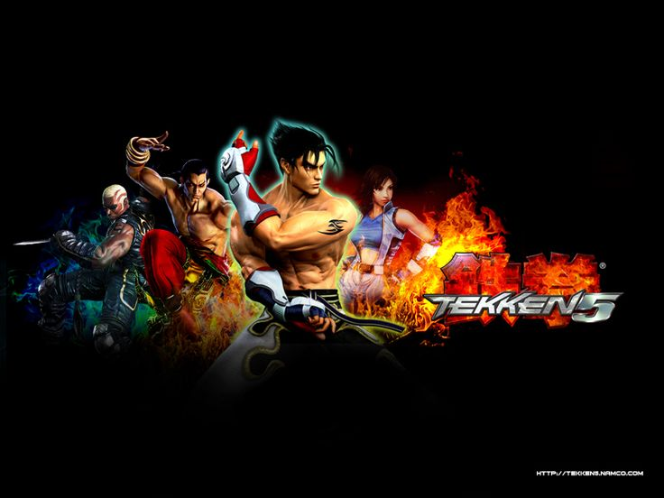

Date: 2004-11-26
Title: Tekken 5
Summary: A fan-favorite entry that refined gameplay, improved speed, and returned the series to its classic style.
Categories: Arcade, Classic
Type: Game Files
File Size: ~3 GB
Format: ISO
Region: Japan / USA / Europe
Platform: Arcade / PS2
Tekken 5 is widely regarded as one of the best entries in the series. It brought back faster gameplay and more responsive controls after the experimental changes in Tekken 4. The game introduced new characters like Asuka Kazama and Feng Wei, along with improved graphics and smooth animations. It also included classic games such as Tekken 1, 2, and 3 as unlockable content, making it a must-play for fans.
Note: Support Original Game By buying Official DVD of Tekken 5 . --Tekken 5 Can be Played By either a real Ps2 or By Ps2 Emulatores via Pc,Download link also include exclusive demo version of the game that can be played. Download